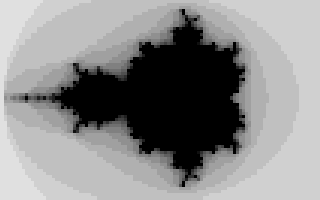

(detail has been lost)

| High resolution |
Low resolution  |
| 16 colors |
Monochrome (detail has been lost) |
You can load data to and from the graph buffer as it's normal memory, but the peculiar hardware of the calculator will not automatically update the display if you do so. There is an OS routine to do this.
| _GrBufCpy | Copies PlotSScreen to the display. | |
|---|---|---|
| DESTROYS | All | |
N.B. The ClrLCDFull command does not clear out the graph buffer. To have a true erasure, you have to zero out the buffer yourself.
LD HL, picdata
LD DE, PlotSScreen+(19*12) ;Start at nineteenth row of display
LD BC, 25*12 ;25 rows of data
LDIR
b_call(_GrBufCpy)
RET
picdata:
.DB $00, $00, $00, $00, $00, $FE, $00, $00, $00, $00, $00, $00
.DB $00, $00, $00, $00, $00, $FE, $00, $00, $00, $00, $00, $00
.DB $00, $00, $00, $00, $00, $FE, $30, $00, $00, $00, $00, $00
.DB $00, $00, $00, $00, $00, $FE, $78, $00, $00, $00, $00, $00
.DB $00, $00, $00, $00, $00, $FF, $30, $00, $00, $00, $00, $00
.DB $00, $00, $00, $00, $00, $FF, $07, $E0, $00, $00, $00, $00
.DB $00, $00, $00, $00, $00, $FF, $77, $E0, $00, $00, $00, $00
.DB $00, $00, $00, $00, $00, $FF, $77, $E0, $00, $00, $00, $00
.DB $00, $00, $00, $00, $00, $F8, $61, $E0, $00, $00, $00, $00
.DB $00, $00, $00, $00, $1F, $F8, $E3, $E0, $00, $00, $00, $00
.DB $00, $00, $00, $00, $7F, $F8, $E3, $F0, $00, $00, $00, $00
.DB $00, $00, $00, $00, $7F, $FE, $EF, $F0, $00, $00, $00, $00
.DB $00, $00, $00, $00, $3F, $FE, $CF, $F0, $00, $00, $00, $00
.DB $00, $00, $00, $00, $1F, $FD, $DF, $F0, $00, $00, $00, $00
.DB $00, $00, $00, $00, $0F, $FD, $DF, $F0, $00, $00, $00, $00
.DB $00, $00, $00, $00, $07, $FC, $1F, $F0, $00, $00, $00, $00
.DB $00, $00, $00, $00, $07, $9C, $0F, $C0, $00, $00, $00, $00
.DB $00, $00, $00, $00, $03, $0E, $0F, $00, $00, $00, $00, $00
.DB $00, $00, $00, $00, $00, $0F, $FE, $00, $00, $00, $00, $00
.DB $00, $00, $00, $00, $00, $07, $F8, $00, $00, $00, $00, $00
.DB $00, $00, $00, $00, $00, $07, $F8, $00, $00, $00, $00, $00
.DB $00, $00, $00, $00, $00, $03, $F0, $00, $00, $00, $00, $00
.DB $00, $00, $00, $00, $00, $03, $F0, $00, $00, $00, $00, $00
.DB $00, $00, $00, $00, $00, $01, $F0, $00, $00, $00, $00, $00
.DB $00, $00, $00, $00, $00, $00, $F8, $00, $00, $00, $00, $00
The following is the GetPixel routine that forms the basis for pixel plotting, and in fact all drawing in monochrome. Given the x-location in A and the y-position in L, it outputs in HL the address of the byte the pixel resides in, and a bitmask in A of some kind. What is the need for a bitmask? Well, knowing the byte of the buffer the pixel is in is only half the story. We have to identify the exact bit, hence the bitmask.
GetPixel: LD H, 0 LD D, H LD E, L ADD HL, HL ADD HL, DE ADD HL, HL ADD HL, HL LD E, A SRL E SRL E SRL E ADD HL, DE LD DE, PlotSScreen ADD HL, DESince the graph buffer is a 12×64 array, multiply the y index by 12. Now we must add the x index to find the byte, but because there are eight pixels to a byte, the x-position must be divided by 8. Then the base address of the buffer is added. I really shouldn't have explained this, since it's a standard array indexing, but the division by 8 might have thrown you.
AND 7
We already have the byte, now we want the bit. Turns out we can get it by moduloing the x-position with 8.
LD A, $80
RET Z
LD B, A
Loop:
RRCA
DJNZ Loop
RET
The result of the AND 7 gave us the position of the pixel in a byte as:
| 0 | 1 | 2 | 3 | 4 | 5 | 6 | 7 |
|---|---|---|---|---|---|---|---|
| One byte | |||||||
; Darken a pixel CALL GetPixel OR (HL) LD (HL), A ; Flip a pixel CALL GetPixel XOR (HL) LD (HL), ABut you cannot be so cavalier with AND. The bitmask must first be inverted, otherwise the other seven pixels will be cleared.
; Lighten a pixel CALL GetPixel CPL AND (HL) LD (HL), AThis is not to say you couldn't use AND alone. In such a case, if the pixel in the buffer is on, Z will be cleared; you can test the status of pixels.
If you get all that, pat yourself on the back, because you now know enough to make a game of Nibbles!!
|
|
Right part absent | |||||||||||||||||
|
|
Left part absent | |||||||||||||||||
|
|
Middle part absent | |||||||||||||||||
|
|
Left and Right parts combined |
; Draws a vertical line from (D, L)-(D, E) LD A, E SUB L RET Z PUSH AF ; Find and store vertical length of line LD A, D CALL GetPixel POP BC ; Now B = number of pixels to draw LD DE, 12 ; There are 12 bytes between rows LD C, A ; Save the bitmask because it will get obliterated PlotLoop: LD A, C OR (HL) LD (HL), A ADD HL, DE DJNZ PlotLoop RET